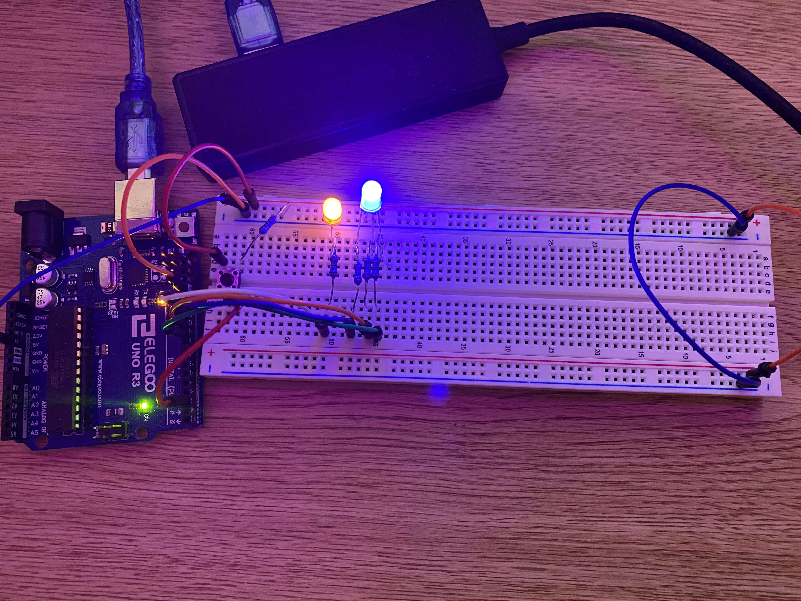
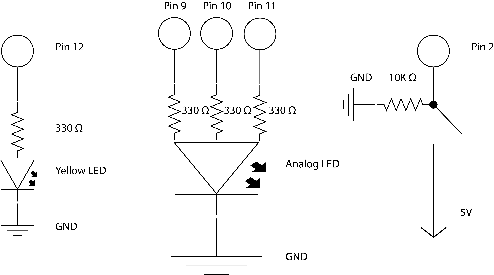
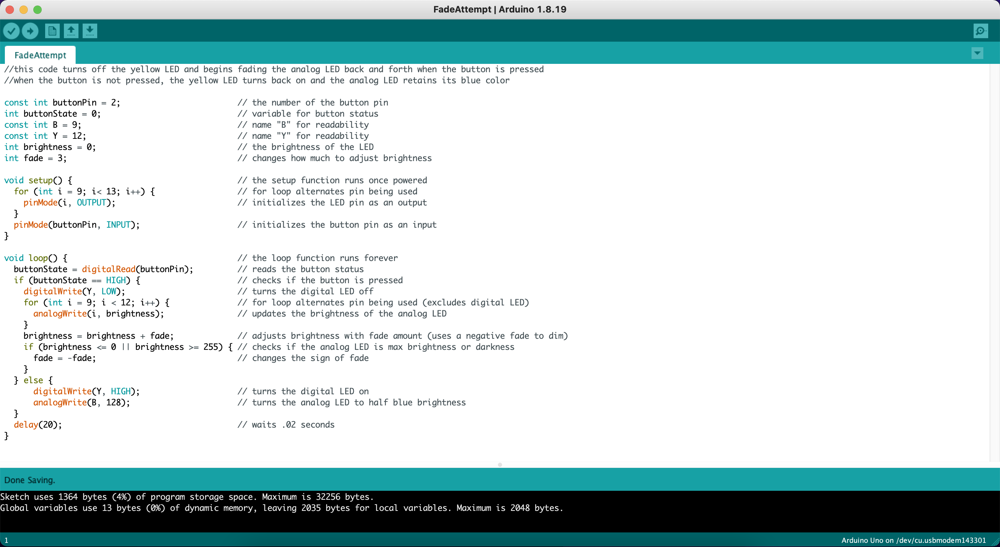

Here is an image of my circuit.

Here is an image of my circuit working. The LEDs blink and turn on/off depending on if I press the button.

Here I went with 300 ohms for the LEDs since I knew the Arduino provided
5 volts and the circuits were in series. The LEDs are recommended to be
powered around 20 mA, so 5/.02 = 250 ohms and 330 ohms was the closest we had. I
did not want to go lower than 250 ohms, as I did not want to possibly
short my LEDs. I went with a 10k ohm resistor for my switch to avoid an open
circuit and to keep the pin grounded when the switch is closed.

Here is my code with comments explaining how it works.